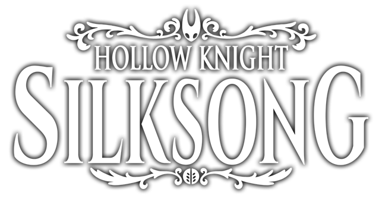

A caçadora letal Hornet se encontra sozinha em um vasto e desconhecido reino.
Ela deve enfrentar inimigos, buscar aliados e desvendar mistérios enquanto ascende em uma perigosa peregrinação até o topo do reino.
Guiada por sua linhagem e pelos ecos de seu passado, Hornet irá explorar cavernas musgosas, florestas de coral e cidadelas reluzentes para desvendar um fio mortal que ameaça esta nova e estranha terra.
Hornet deve dominar um novo conjunto de movimentos poderosos para sobreviver. Ela irá desferir ataques devastadores, aprender incríveis habilidades de seda e criar ferramentas mortais para superar os desafios do reino.
Mais de 200 inimigos ferozes estão entre Hornet e a cintilante cidadela no topo do reino. Feras e caçadores, assassinos e reis, monstros e cavaleiros – Hornet deve enfrentá-los todos com coragem e habilidade!

O vasto e interconectado mundo de Hollow Knight: Silksong ganha vida em um estilo 2D tradicional e feito à mão. Cidades douradas, lagos de fogo e charnecas enevoadas são ilustrados em detalhes requintados, tudo acompanhado por uma vibrante trilha orquestral.
Em sua busca pela verdade por trás de sua captura, Hornet fará amizades inesperadas, descobrirá segredos chocantes e resolverá antigos mistérios em um reino assombrado repleto de maravilhas.


Diretor de Arte & Animação
“Cada quadro é desenhado com paixão para dar vida ao mundo de Silksong.”
Designer & Programador
“Desafios e descobertas aguardam a cada canto do reino.”
Compositor
“A trilha sonora é feita para emocionar e guiar sua jornada.”